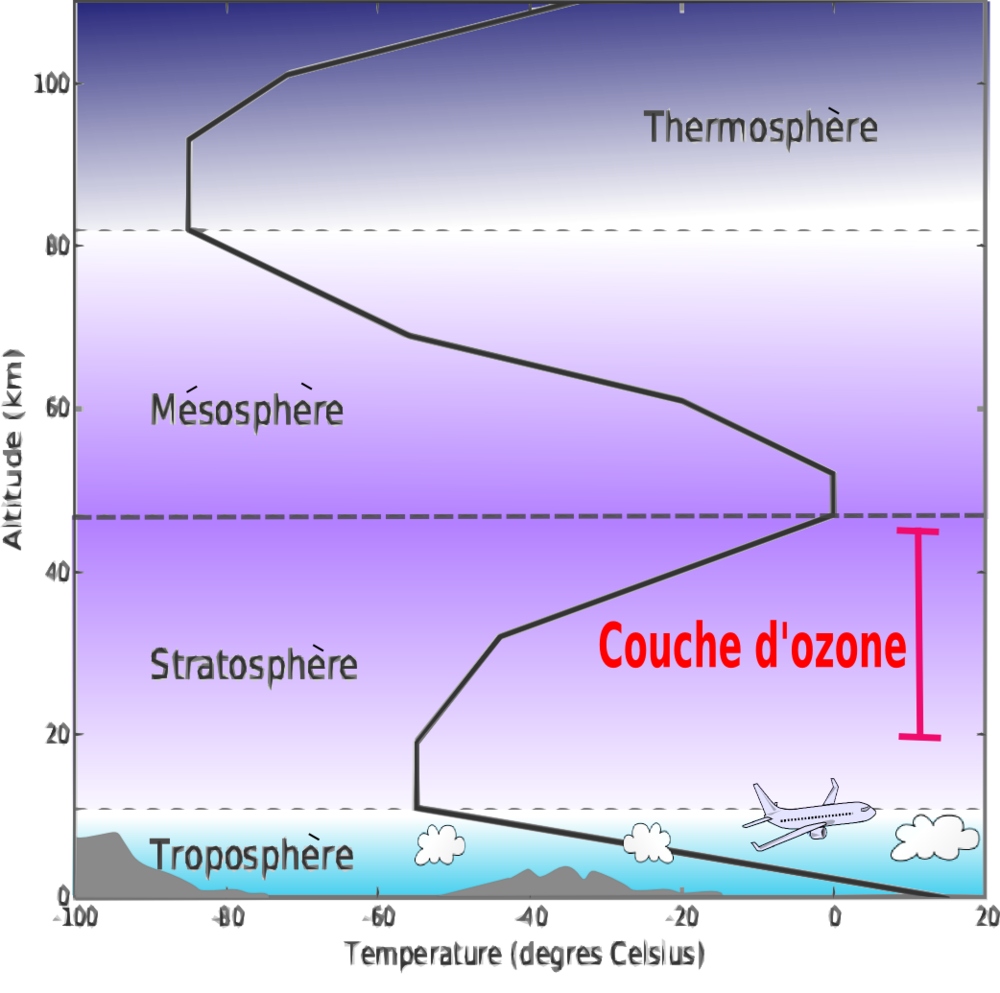

L'atmosphère est une enveloppe gazeuse qui entoure la terre, sur quelques centaines de kilomètres.
L'air sec se compose à:
Les nuages, constitués de particules liquides ou solides en suspension dans l'air, ne sont pas considérés comme des constituants de l'atmosphère. En revanche, la vapeur d'eau contenue dans l'air humide représente, en moyenne, 0,25 % de la masse totale de l'atmosphère. La vapeur d'eau est le seul fluide de l'atmosphère terrestre susceptible de changer rapidement de phase(solide, liquide, gaz), essentiellement en fonction de la température, et dont la concentration est très variable dans le temps et dans l'espace. La chaleur a tendance à faire monter l'air et son humidité, alors que la pression de l’atmosphère et sa température diminuent avec l'altitude dans la troposphère.
L'atmosphère est divisée en plusieurs couches d'importance variable, délimitées par les discontinuités dans la variation de la température en fonction de l'altitude. De bas en haut :

De la surface du globe à 8–15 km d'altitude. Dans cette couche évoluent tous les aéronefs commerciaux excepté certains jets d'affaire et le concorde dans les temps! La température y décroît avec l'altitude.
Sa limite supérieure est la Tropopause
Elle va de 8–15 à 50 km d'altitude. Dans cette couche spécifique, la température croît avec l'altitude jusqu'à 0 °C. Elle abrite une majeure partie de la couche d'ozone ;
Sa limite supérieure est la Stratopause
S'étend de 50 km à environ 80 à 85 km. La température décroît à nouveau avec l'altitude, atteignant 100 °C (173,1 K) dans la haute mésosphère. C'est dans la mésosphère que la plupart des météoroïdes se consument en entrant dans l'atmosphère. C'est aussi cette même couche qui peut dévier les bolides rasants et affecter leurs caractéristiques (masse, orbite) comme cela a été observé lors de l'évènement du 13 octobre 1990.
Sa limite supérieure est la Mésopause.
C'est la couche atmosphérique commençant vers 80 à 85 km et allant jusqu'à 640 km d'altitude. La température y augmente avec l'altitude. Bien que la température puisse atteindre les 1 500 °C, un individu ne la ressentirait pas à cause de la très faible pression. La station spatiale internationale orbite dans cette couche à une altitude maintenue autour de 350 à 400 km.
La Thermopause est la limite supérieure de la thermosphère. Elle varie entre 500 et 1 000 km d'altitude.
la partie de l'atmosphère ionisée par les radiations solaires, s'étire de 60 à 800 km et se constitue de trois couches :
Elle commence avec l'exobase, qui est aussi connue comme le « niveau critique », vers 500–1 000 km et s'étire jusqu'à plus de 10 000 km d'altitude. Elle contient des particules circulant librement et qui migrent ou proviennent de la magnétosphère ou du vent solaire.
Dite aussi de référence, l’atmosphère standard internationale (ISA) est un modèle théorique utilisé pour représenter des conditions atmosphériques moyennes, afin d’uniformiser les calculs aéronautiques (altitude, vitesse, pression, etc.). Elle permet aux pilotes et ingénieurs de travailler avec des valeurs de base constantes et comparables partout dans le monde.
Dans cette atmosphère type, on suppose que :
Ce modèle est essentiel pour calibrer les instruments de bord comme l’altimètre et calculer les performances des aéronefs. Par exemple, un avion qui vole à 10 000 pieds dans une atmosphère plus chaude que l’ISA subira une diminution de performance due à la baisse de densité de l’air.
L’atmosphère standard est une base de référence, mais dans la réalité, les conditions changent constamment (pression, température, humidité). C’est pourquoi le pilote doit toujours comparer l’ISA aux conditions actuelles, notamment via les METAR ou les TAF.
Chaque connaissance acquise aujourd’hui est une altitude de plus franchie demain.
Ne lâchez rien, l’aviation vous attend !